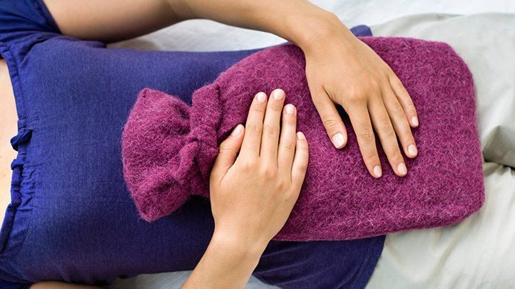

How Does Reflexology Alleviate Menstrual Cramps? A Natural Approach to Pain Relief

Introduction
Menstrual cramps, also known as dysmenorrhea, are a common issue among women, causing discomfort, pain, and disruptions to daily life. While over-the-counter pain relievers and heating pads can provide temporary relief, many women seek natural remedies to ease period pain more effectively. Reflexology, an alternative therapy that involves applying pressure to specific reflex points on the feet, hands, and ears, has been recognized for its ability to alleviate menstrual cramps and promote overall reproductive health.
This article explores how reflexology can help relieve period pain, the science behind its effectiveness, and how to integrate it into a wellness routine.
Understanding Menstrual Cramps
Causes of Menstrual Cramps
Menstrual cramps occur due to the contraction of the uterus as it sheds its lining. The pain results from:
- Prostaglandin Production: High levels of prostaglandins cause stronger contractions, leading to more intense pain.
- Poor Blood Circulation: Reduced blood flow can increase cramping and discomfort.
- Hormonal Imbalances: Fluctuations in estrogen and progesterone levels contribute to pain severity.
- Stress and Tension: Stress exacerbates pain by tightening muscles and reducing relaxation.
- Underlying Conditions: Issues such as endometriosis, fibroids, or PCOS can worsen menstrual pain.
How Reflexology Helps Alleviate Menstrual Cramps
- Stimulating Reproductive Reflex Points
Reflexology targets specific points that correspond to the reproductive system, helping regulate uterine contractions and improve circulation. These reflex points include:
- Uterus and Ovaries Reflex (Inner and Outer Heel Area): Helps relieve cramping and regulate menstrual cycles.
- Pituitary Gland Reflex (Center of the Big Toe/Thumb): Balances hormone production.
- Lower Back and Pelvic Reflex (Base of the Heel): Reduces tension and pain in the lower abdomen.
- Improving Blood Circulation
Better circulation ensures that oxygen and nutrients reach the uterus, reducing inflammation and cramping. Reflexology enhances blood flow by:
- Stimulating the circulatory system
- Encouraging relaxation and muscle release
- Removing blockages that restrict blood flow
- Reducing Stress and Muscle Tension
Stress can intensify menstrual cramps by causing muscle tightness. Reflexology:
- Lowers cortisol levels, which contribute to tension
- Activates the parasympathetic nervous system for relaxation
- Helps release endorphins, natural pain relievers
- Regulating Hormonal Imbalances
Hormonal fluctuations can worsen period pain. Reflexology supports endocrine balance by:
- Stimulating the pituitary gland for hormone regulation
- Improving ovarian function
- Enhancing progesterone and estrogen balance
- Supporting Detoxification and Lymphatic Drainage
Toxin buildup can contribute to inflammation and menstrual discomfort. Reflexology aids detoxification by:
- Stimulating the liver and kidney reflex points
- Encouraging lymphatic drainage to reduce bloating
- Supporting the elimination of excess hormones
Key Reflexology Points for Menstrual Cramp Relief
- Uterus and Ovaries Reflex (Inner and Outer Heel): Directly targets reproductive organs.
- Lower Back Reflex (Heel Area): Relieves lower back pain and tension.
- Solar Plexus Reflex (Center of Foot/Hand Palm): Promotes relaxation and stress relief.
- Kidney and Liver Reflex (Midfoot and Right Foot Below the Ball): Supports detoxification.
- Pituitary Gland Reflex (Big Toe/Thumb Center): Regulates hormone levels.
How to Perform Reflexology for Menstrual Cramps
- Self-Reflexology Techniques
- Apply firm, circular pressure to each reflex point for 2–3 minutes.
- Use deep breathing exercises while massaging for added relaxation.
- Repeat daily, especially before and during your menstrual cycle.
- Professional Reflexology Sessions
- A trained reflexologist can provide targeted therapy for optimal results.
- Regular sessions (weekly or monthly) can enhance menstrual health.
- Combining Reflexology with Other Natural Remedies
To maximize relief, integrate reflexology with:
- Heat Therapy: Use heating pads to relax muscles.
- Herbal Teas: Chamomile and ginger tea help reduce inflammation.
- Exercise & Yoga: Gentle movement alleviates tension and pain.
- Hydration: Drink water to support circulation and detoxification.
- Essential Oils: Lavender and clary sage promote relaxation.
Scientific Research on Reflexology and Menstrual Pain Relief
Several studies highlight reflexology’s effectiveness in reducing menstrual pain:
- A study in The Journal of Complementary Therapies in Medicine found that reflexology significantly reduced dysmenorrhea symptoms in women.
- Research in The Journal of Obstetrics and Gynaecology demonstrated that women receiving reflexology experienced lower pain intensity and shorter periods of discomfort.
- A clinical trial in Pain Management Nursing reported that reflexology improved menstrual pain relief compared to a placebo.
Potential Limitations of Reflexology for Menstrual Cramps
- Reflexology is a complementary therapy and should not replace medical treatments.
- Results may vary depending on individual pain tolerance and health conditions.
- Women with severe menstrual disorders should consult a healthcare professional before starting reflexology.
Conclusion
Reflexology offers a natural and effective way to alleviate menstrual cramps by stimulating reproductive reflex points, improving circulation, and reducing stress. While it is not a substitute for medical treatments, it serves as a valuable complementary therapy for those seeking holistic pain relief. Whether practiced at home or with a professional, reflexology provides a gentle and non-invasive approach to menstrual health and overall well-being.